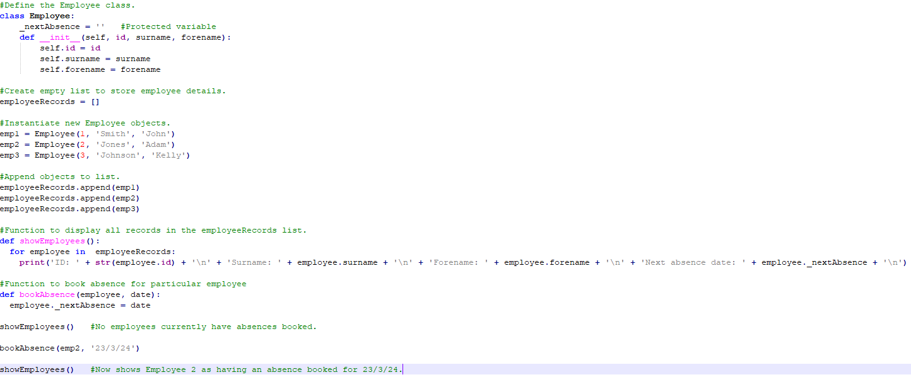

Welcome to Object-orientated Programming.
Here you will find artefacts and reflections related to the Object-Orientated Programming module.
Unit 1
In this introductory unit, we are introduced to some of the core concepts of object-orientated programming, namely inheritance and polymorphism.
We were set the task of reading the article entitled 'The Power of ePortfolio Development to Foster Reflective and Deeper Learning in an Online Graduate Adult Education Program’ by Di Silvestro & Nadir (2021)' and comment on an unexpected aspect. My thoughts are as follows:
The article ‘The Power of ePortfolio Development to Foster Reflective and Deeper Learning in an Online Graduate Adult Education Program’ by Di Silvestro & Nadir (2021) provides an interesting insight into the many aspects and benefits of ePortfolios. In particular, the article suggests that reflective learning is of particular benefit since individuals tend to learn best by reflecting on their own experiences and goes on to state that “Reflective learning is closely associated with the development of self-knowledge and transformative learning.”
We were also asked to read the article 'State-of-the-Art Object-Oriented Metrics and Its Reusability: A Decade Review (Padhy et al)' and submit a forum post discussing the factors in software reusability. My submission was as follows:
Finally, we were set the task of developing a Python program to demonstrate protected and unprotected variables. I have included my program below.
In this program, the convention of naming protected variables within a class with a preceeding underscore is followed.
Unit 2
In this unit, we were asked to write a Python program to achieve basic employee-related functionality which includes retaining employee details and allowing an employee to book a day of annual leave.
My approach to this task was to define an Employee class, instantiate three Employee objects and define a function to allow the user to book a future absence.

Unit 3
This unit introduced us to the Unified Modelling Language (UML) and set us the task of designing a UML diagram to demonstrate the basic functionality of a washing machine. I have include my diagram below:
Unit 5
In this unit, we are asked to review the Codio module inheritance.
The Codio module uses a card game to explain the concept of inheritance whereby a Hand class takes a Deck object as an argument. In this case, the Hand class inherits all of the properties of the Deck class, such as the Shuffle() method.
A similar way of demonstrating inheritance could be through defining a Mammal class which would include the basic methods breathe() and eat() which all mammals must share, and then pass this class to a Dog class, for example. The Dog class would inherit the breathe() and eat() methods but would have its own unique methods, such as bark(), which is not necessarily shared among other mammals.
We were also asked to develop a program demonstrating the concept of polymorphism which could be used in a driveless car program. For this task, I have written a small program which includes the Drivetrain and Navigation classes, each of which has a method called start(). This is shown below:
This produces the following output:
Unit 6
In this unit, we reviewed the concept of abstraction. The associated Codio module highlighted a few key aspects of the Python approach to class implementation which stood out to me, namely that class attributes are public by default. This is in constrast to say, C++, where attributes must explicitly be declared using the public keyword before they can be accessed by functions outside of the class. It is also interesting to note that delcaring a variable private by using a single preceeding underscore is a convention only in Python; it does not change how that variable can be accessed. Using a double underscore however does enforced restrictions on how private attributes can be accessed. Doing so requires the use of a helper function to return that private variable.
Unit 7
This unit was concerned with debugging, data structures and data searching. For this unit, I want to discuss the ways in which data structures support object-oriented development.
Data structures allow related objects to be grouped together in a logical way. For example, suppose we want to keep track of a group of 30 students in a program designed to store their id numbers and other basic information. One way we could approach this problem is to define a variable for each student, i.e. student1, student2, ..., student30. This would be a very cumbersome way of managing the student variables and gives us no way of adding extra data, such as grades or contact details. In such a system, we'd need to define extra variables, such as student1_grade, student2_grade and so on. This would be completely unmanageable, especially if we were to apply it to larger student numbers. Data structures allow us to store such information in accessible formats.
In our example, we could define a list, which is a collection of items, to hold the student id numbers which we'd declare using the command student_ids = []. This would then allow us to append id numbers to the list by using the command student_ids.append('1'). The limitation here is that there is no obvious link to other student data. A better approach would be to use the Dictionary data structure which would allow us to link student objects with id numbers. For example, we could define the following Dict:
student_ids = {
"student_1": "1",
"student_2": "2",
# ...and so on
}
This would allow us to access the id number data by specifying the student number when calling the dict, i.e. print(student_ids["student1"]).
Finally, we may want to ensure that our student ids are unique, i.e. there are no duplicates. To achieve this, we could define a set, and add each id number from the student_ids dict. Since sets only store unique values, we could then compare the number of entries in the set with the number of key pairs in the dict. If they do not match, there must be a duplicate.
Unit 8
In this unit, we were asked to discuss the strengths and weaknesses of the metamodel approach to the design of Internet of Things devices and submit within a forum. A copy of my contribution is below:
Unit 9
In this unit, we were tasked with extending a basic string operation program with the use of the assert keyword to test the function of those operations. My submission is below:
On lines 13 and 14, new variables are initialised with the result of the operations used within the print() statements on lines 7 and 10. Lines 16 and 17 use the assert keyword to test whether the result of the string operations stored in the variables concat_str and repeat_str produce the output we expect, that is, 'HelloWorld!' and 'HelloHelloHello'. Running this program yields no output, as expected.
To test the effectiveness of the assert statements, the program is run again, this time following a deliberate mistake in each of the evaluation strings, as shown below:

Here, the first letter is removed from the evaluation string on line 16 and the last letter from the evaluation string on line 17. This produces the following output:
The assert error raises an exception indicating that the first assert statement is false. Since exceptions terminate program flow, the second assert statement is no longer evaluated.